1 WinEntry గురించి
WinEntry ని Simhadri Systems వారు Telugu రాష్ట్రాల్లోని licensed retail wine & liquor వ్యాపారాల కఠినమైన రోజువారీ stock reconciliation అవసరాలను తీర్చడానికి design & engineer చేశారు. ఇది ఏ retail వ్యాపారానికైనా — unit-based stock tracking అవసరమయ్యే అన్ని రంగాలకు — పనికొచ్చే powerful inventory management tool.
App ఏమి చేస్తుంది
WinEntry అత్యంత కీలకమైన రోజువారీ reconciliation process ని — "opening vs. closing" balance — automate చేస్తుంది. అధిక volume గల retail వ్యాపారాలకు ఇది చాలా అవసరం.
- Unit-Level Tracking — అనేక brands, categories మరియు వివిధ sizes అంతటా inventory manage చేయండి (bottles, cases, packets, bags మొదలైనవి)
- Daily Reconciliation — రోజువారీ purchases, sales మరియు expenses record చేసి, accurate daily stock balance sheets తక్షణమే generate చేయండి
- Calculated Sales — Opening Balance + Purchases − Closing Balance = Daily Sale — ప్రతి product మరియు size కు automatically calculate అవుతుంది
- Multilingual Interface — ప్రస్తుతం English మరియు Telugu support చేస్తుంది; కనీస మార్పులతో ఇతర Indian భాషలకు కూడా localise చేయవచ్చు
- Privacy-First Design — default గా పూర్తిగా offline పని చేస్తుంది; optional cloud backup మాత్రమే data బయటకు పంపుతుంది
- Excel Export — ప్రతి report మరియు record ని audits, accounts లేదా regulatory submission కోసం Excel కి export చేయవచ్చు
దీన్ని వాడడం ఎందుకు లాభదాయకం
వ్యాపారుల కోసం, వ్యాపారులే తయారు చేసింది. Retail licensees యొక్క విశేష అవసరాల నుండి పుట్టిన WinEntry, peers మధ్య share చేయబడే professional-grade tool గా అందించబడుతోంది. Feedback మరియు నిరంతర మెరుగుదల కోసం community ని promote చేస్తుంది.
మానవ తప్పులను తొలగిస్తుంది. కాగితంపై manual entries కు బదులు digital logging వాడడం వల్ల mathematical errors మరియు financial discrepancies గణనీయంగా తగ్గుతాయి.
అధికంగా customize చేయగలిగేది. Licensed retail trade కు అనువుగా ఉన్నా, underlying logic ఏ retail sector కైనా — Dairy, Hardware, Cosmetics — code మార్పులు లేకుండా adapt చేయవచ్చు.
వ్యాపార Use Cases
| రంగం | వినియోగం |
|---|---|
| Licensed retailer (ప్రస్తుత deployment) | Brand మరియు pack size వారీగా bottles — రోజువారీ reconciliation మరియు regulatory reports |
| Dairy & Beverage | అధిక daily turnover గల crates మరియు individual bottles |
| Construction & Hardware | Cement bags, tile boxes, plumbing fixtures |
| Personal Care & Cosmetics | వివిధ sizes లో (ml / grams) అనేక brands |
| Pet Supply | Packaged food bags మరియు accessories by unit |
Size Codes (ప్రస్తుత retail deployment)
ప్రతి product కు గరిష్టంగా 5 size variants support చేస్తుంది. ప్రస్తుత licensed retail configuration లో ఇవి:
| Size Code | వివరణ | సాధారణ పరిమాణం | Case లో Units |
|---|---|---|---|
| Full / Big | 551–900 ml (సాధారణంగా 750 ml లేదా 650 ml Beer) | 12 per case | |
| QQ + "L" | Litre | 1000 ml (brand code కు "L" చేర్చడం ద్వారా) | 9 per case |
| PP | Half / Pint | 201–550 ml (సాధారణంగా 375 ml లేదా Can Beer) | 24 per case |
| NN | Quarter / Nip | 101–200 ml (సాధారణంగా 180 ml) | 48 per case |
| DD | Dip / Miniature | ≤ 100 ml (సాధారణంగా 90 ml లేదా 60 ml) | 96 per case |
ఇతర రకాల వ్యాపారాలకు, ఆ deployment setup సమయంలో size codes మరియు వాటి వివరణలు configure చేయబడతాయి.
2 App Install చేయడం
- మీ Android phone లో Google Play Store తెరవండి
- WinEntry లేదా WinEntry Simple Inventory search చేయండి
- Simhadri Systems publish చేసిన result తాకి Install తాకండి
- Install అయిన తర్వాత Open తాకండి
అవసరమైనవి: Android 8.0 (Oreo) లేదా తదుపరి · Sign in కోసం Google account
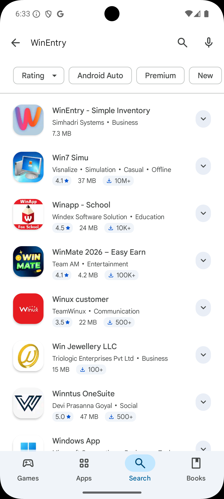
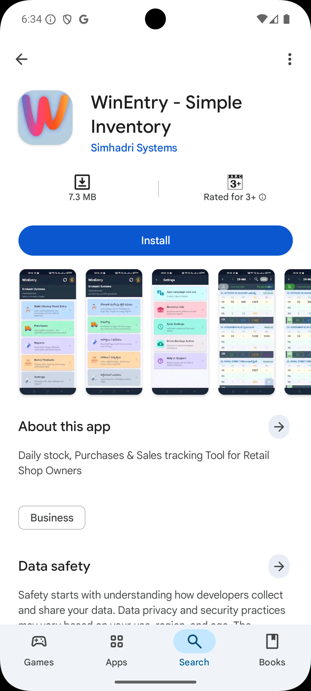
3 Sign In చేయడం
WinEntry మీ Google account తో sign in చేస్తుంది — Gmail లేదా YouTube కి వాడే అదే account.
- WinEntry తెరవండి — Sign In screen కనిపిస్తుంది
- Sign in with Google తాకండి
- List నుండి మీ Google account ఎంచుకోండి (అవసరమైతే కొత్తది add చేయండి)
- Request చేసిన permissions అనుమతించండి — app కు Sheets access కేవలం optional cloud backup కోసం మాత్రమే అవసరం
- Home screen కి తీసుకెళ్ళబడతారు
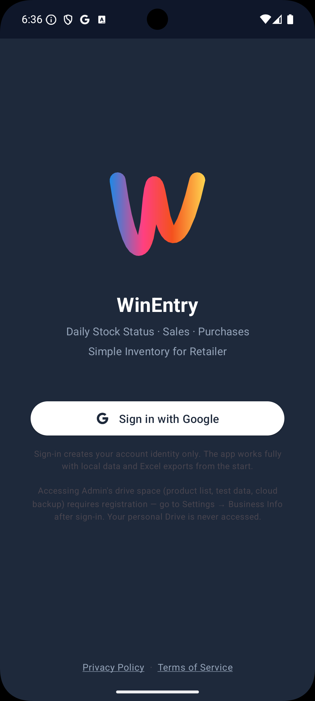
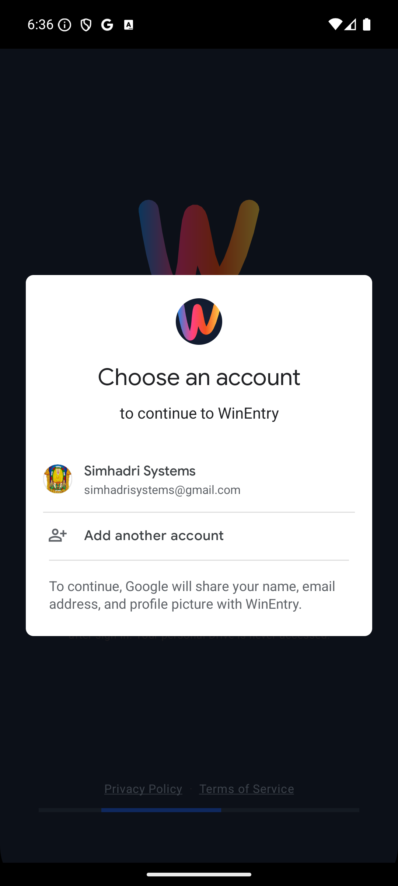
4 మొదటిసారి Setup
మొదటిసారి sign in చేసిన తర్వాత app తెరిచినప్పుడు, Home screen పై భాగంలో amber రంగులో Getting Started card కనిపిస్తుంది. ఈ card తాకి setup checklist తెరవండి.
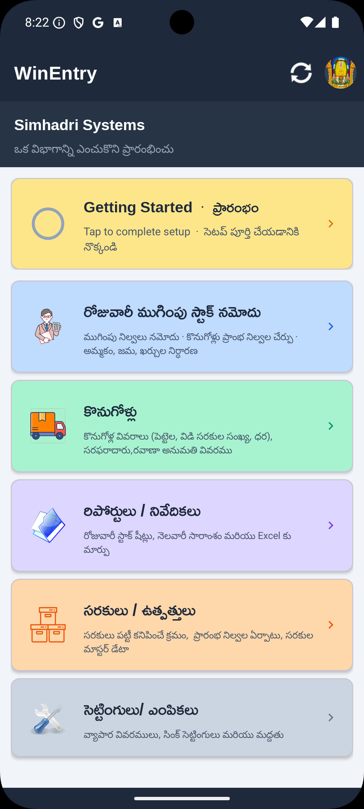
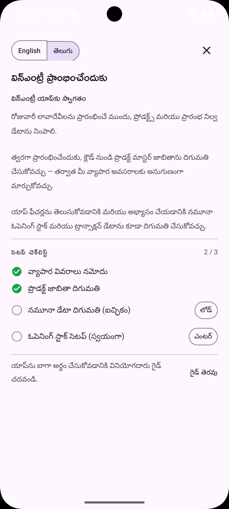
Checklist లో 4 steps ఉన్నాయి. Step 1 మరియు Step 2 తప్పనిసరి. Card మాయమవ్వాలంటే Step 3 లేదా Step 4 లో ఏదైనా ఒకటి కూడా complete చేయాలి — అప్పుడే రోజువారీ వ్యాపారం మొదలుపెట్టవచ్చు.
Step 1 — Business Info
మీ business పేరు మరియు owner వివరాలు exported reports మరియు Home screen లో header గా కనిపిస్తాయి.
- "Set Up Business Information" పక్కన Set Up తాకండి — Business Info screen తెరుచుకుంటుంది
- Fields పూరించండి:
- Owner Name — మీ పూర్తి పేరు
- Business Name (తప్పనిసరి) — మీ వ్యాపారం లేదా దుకాణం పేరు
- Licence / Reg. No — registration లేదా licence number (locally మాత్రమే store అవుతుంది, admin కి share కాదు)
- Address Lines 1 & 2, Location — దుకాణం చిరునామా మరియు ప్రాంతం
- Phone — 10-digit mobile number
- Save & Register తాకండి
- Confirmation dialog లో admin కి share చేయబడే fields వివరిస్తుంది. Save & Register తాకి confirm చేయండి.
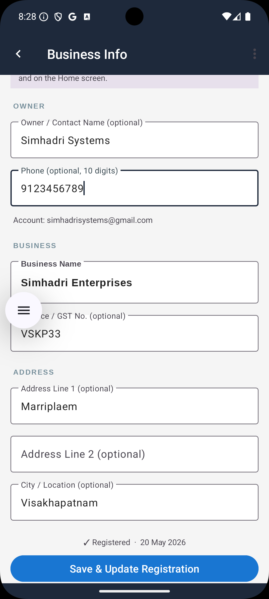
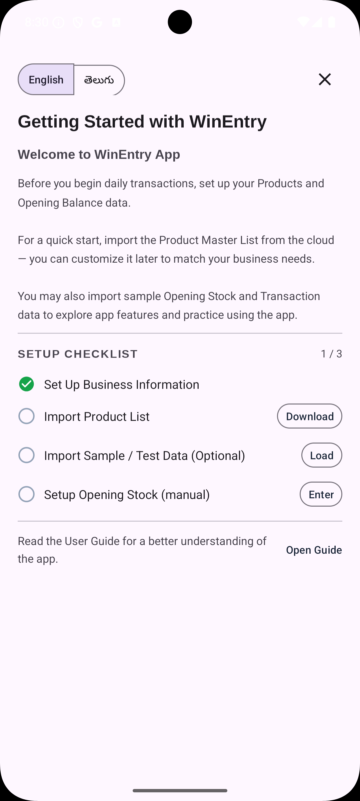
Save చేసిన తర్వాత checklist లో Step 1 పై green tick కనిపిస్తుంది. తదుపరి మార్పులకు button label "Save & Update Registration" గా మారుతుంది.
Step 2 — Product List Import చేయడం
Admin యొక్క standard product master list (product codes, పేర్లు, sizes మరియు prices) మీ phone కి download చేస్తుంది.
- "Import Product List" పక్కన Download తాకండి
- Progress spinner కనిపిస్తుంది — connection speed బట్టి 5–30 seconds వేచి ఉండండి
- Complete అయిన తర్వాత green tick కనిపిస్తుంది
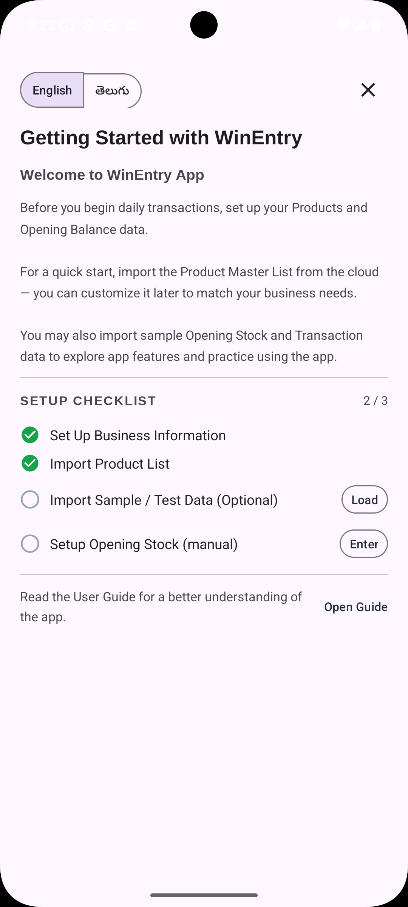
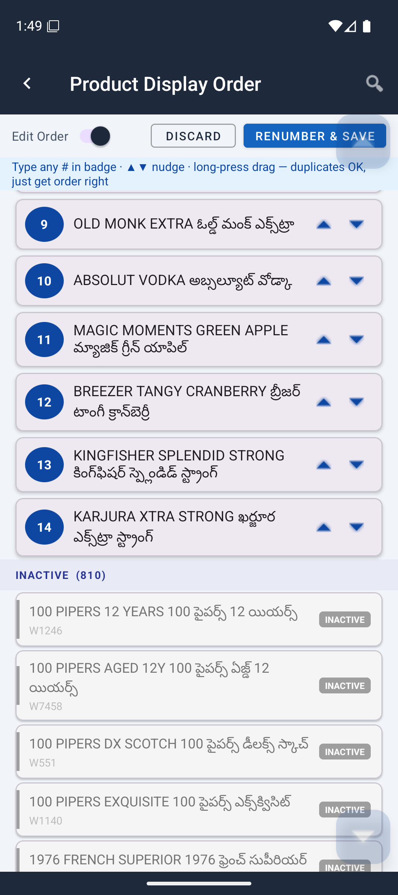
Download తర్వాత, Items/Products → Product Display Order కి వెళ్ళి products ని మీరు stock count చేసే క్రమంలో arrange చేయండి. ఇది daily closing entry వేగంగా చేయడానికి సహాయపడుతుంది.
ఇక్కడ set చేసిన order app అంతటా consistently కనిపిస్తుంది — Daily Stock Entry, Opening Stock మరియు అన్ని reports లో products ఈ sequence లో appear అవుతాయి. Reorder చేయడానికి: Product Display Order తాకి Edit switch on చేయండి, తర్వాత left వైపు drag handle తో rows move చేయండి లేదా ప్రతి product పక్కన ↑ ↓ nudge arrows తాకండి. పూర్తయినప్పుడు Renumber & Save తాకండి. Edit switch off చేసిన స్థితిలో ఏదైనా product row ని double-tap చేస్తే దాన్ని deactivate చేయవచ్చు — deactivated products Inactive section కి move అవుతాయి మరియు daily stock entry లో కనిపించవు.
Step 3 — Sample Data Load చేయడం (ఐచ్ఛికం)
Sample data వల్ల real figures enter చేయడానికి ముందు app ని practice చేయవచ్చు. Dummy opening stock మరియు కొన్ని రోజుల transactions load అవుతాయి — అన్ని screens ని real data తో చూడవచ్చు.
- "Import Sample / Test Data (Optional)" పక్కన Load తాకండి
- Date picker తెరుచుకుంటుంది — sample data కు opening balance తేదీగా ఏ తేదీ కావాలో ఎంచుకోండి. Default: 7 రోజుల క్రితం.
- OK తాకండి — sample data background లో load అవుతుంది (10–30 seconds)
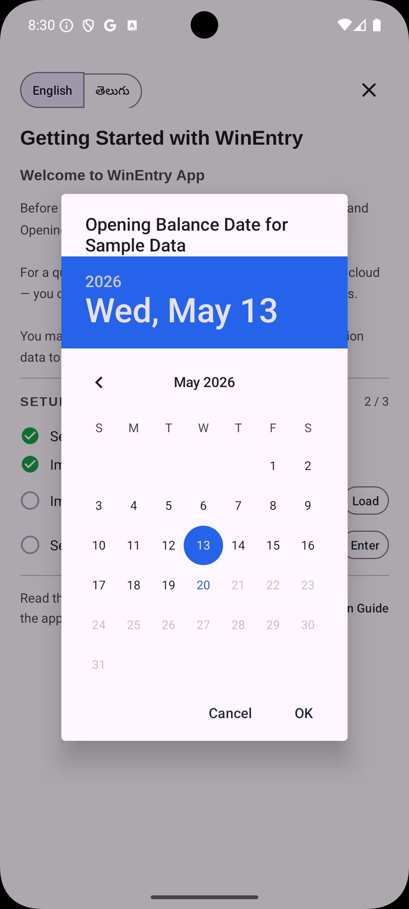
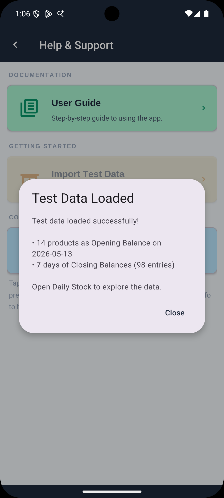
Load అయిన తర్వాత green tick కనిపిస్తుంది మరియు card "Trial setup complete — you're all set!" చూపిస్తుంది.
Step 4 — Opening Stock Setup చేయడం
Sample data కాకుండా real data తో start చేస్తున్నారంటే, ప్రారంభ inventory గా ప్రతి product మరియు size కి actual unit count enter చేయాలి. ఇది మొదటిసారి live వ్యాపారం ప్రారంభించేటప్పుడు ఒకసారి మాత్రమే చేస్తారు. రెండు పద్ధతులు ఉన్నాయి — మీకు అనుకూలమైనది ఎంచుకోండి.
చిన్న product lists కు suitable.
- "Setup Opening Stock (manual)" పక్కన Enter తాకండి
- Opening Stock Setup screen తెరుచుకుంటుంది
- పై భాగంలో మీ మొదటి trading తేదీ ఎంచుకోండి
- ప్రతి product కు size fields తాకి మీ దగ్గర ఉన్న unit count type చేయండి
- Size fields మరియు products మధ్య వేగంగా move చేయడానికి keyboard Next key వాడండి
- దిగువన SAVE తాకండి — confirm చేయడానికి ముందు total unit count చూపిస్తుంది
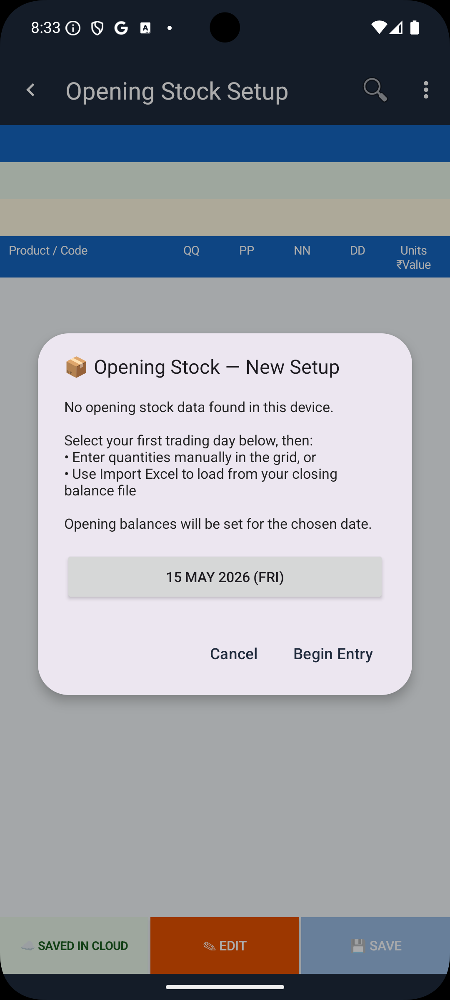
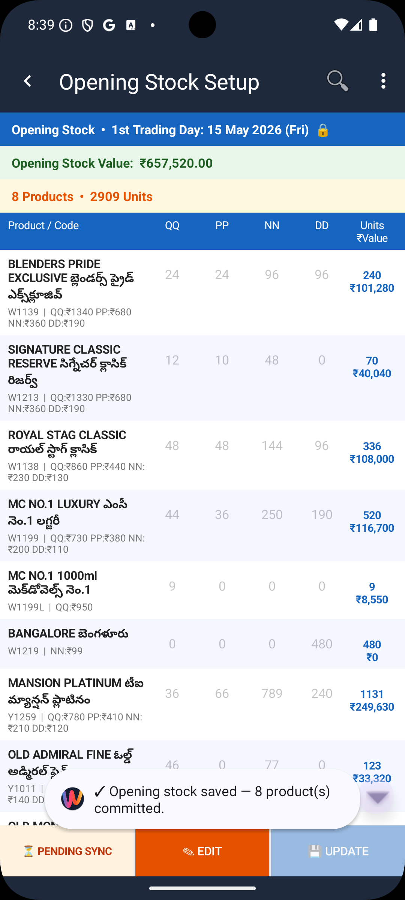
Opening stock figures ఇప్పటికే spreadsheet లో ఉంటే, లేదా product list పెద్దగా ఉంటే Excel import చాలా వేగంగా ఉంటుంది.
- "Setup Opening Stock (manual)" పక్కన Enter తాకి Opening Stock Setup screen తెరవండి
- ⋮ (కుడివైపు పై menu) → Download Template తాకండి
- App మీ phone Downloads folder లో pre-filled Excel file save చేస్తుంది. Template లో ప్రతి product కు ఒక row, ప్రతి size కు (L, QQ, PP, NN, DD) ఒక column ఉంటుంది. Product codes ముందే fill అయి ఉంటాయి — వాటిని మార్చకండి.
- Computer లో లేదా phone లో Google Sheets / Microsoft Excel లో template తెరవండి
- ప్రతి product మరియు size కు quantity columns లో opening stock counts enter చేయండి. ఆ size లేకపోతే blank వదలండి లేదా 0 enter చేయండి.
- File save చేసి phone కు transfer చేయండి (WhatsApp, Google Drive, email లేదా USB ద్వారా)
- Opening Stock Setup screen లో తిరిగి వచ్చి ⋮ → Import from Excel తాకండి
- Phone storage నుండి saved file ఎంచుకోండి
- App figures import చేసి import result summary చూపిస్తుంది (Section 12 చూడండి)
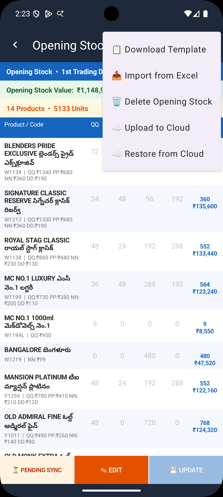
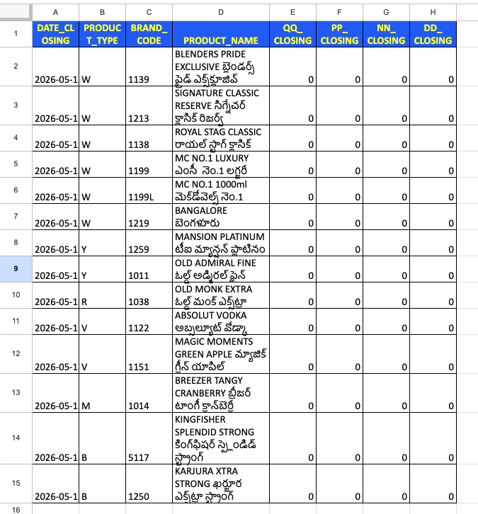
ఏ పద్ధతి అయినా save చేసిన తర్వాత Step 4 పై green tick కనిపిస్తుంది. అన్ని required steps complete అయిన తర్వాత Getting Started card automatically మాయమవుతుంది.
5 Home Screen
Setup తర్వాత, Home screen లో five module cards కనిపిస్తాయి.
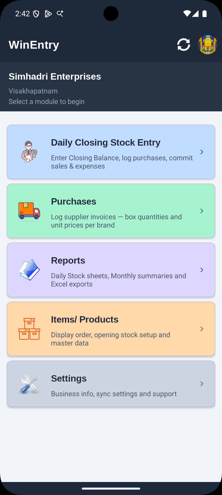
Header (పైన బార్)
| Element | ఏమి చేస్తుంది |
|---|---|
| Business name + location | పైన చూపిస్తుంది — Business Info నుండి తీసుకుంటుంది |
| Cloud/Sync icon (కుడివైపు పైన) | Data ని cloud కి manually push చేయడానికి తాకండి. White = అన్నీ synced; Red = sync errors, retry కు తాకండి; Amber = Drive Backup setup కాలేదు |
| Account icon | Sign in అయినప్పుడు Google profile photo చూపిస్తుంది. Account email చూడటానికి లేదా sign out కు తాకండి |
Module Cards
| Card | ఏమి చేస్తుంది |
|---|---|
| Daily Closing Stock Entry | నేటి closing unit count enter చేసి day-end totals commit చేయండి |
| Purchases | Reference number, quantities మరియు prices తో supplier delivery invoices record చేయండి |
| Reports | Daily, period మరియు monthly reports చూసి Excel కి export చేయండి |
| Items / Products | Product list, display order మరియు opening stock manage చేయండి |
| Settings | Business info, language, cloud backup, sync settings మరియు support |
Module తెరవడానికి ఏదైనా card తాకండి. Home కి తిరిగి రావడానికి (module లోపల) back arrow లేదా phone back button వాడండి.
6 Daily Stock Entry
ఇది రోజువారీ ముఖ్యమైన workflow. రోజు చివరలో shelves లో units count చేసి closing balance enter చేయండి. App automatically daily sales calculate చేస్తుంది.
Opening Balance + Purchases − Closing Balance = Daily Sale
Screen తెరవడం
Home screen నుండి Daily Closing Stock Entry తాకండి.
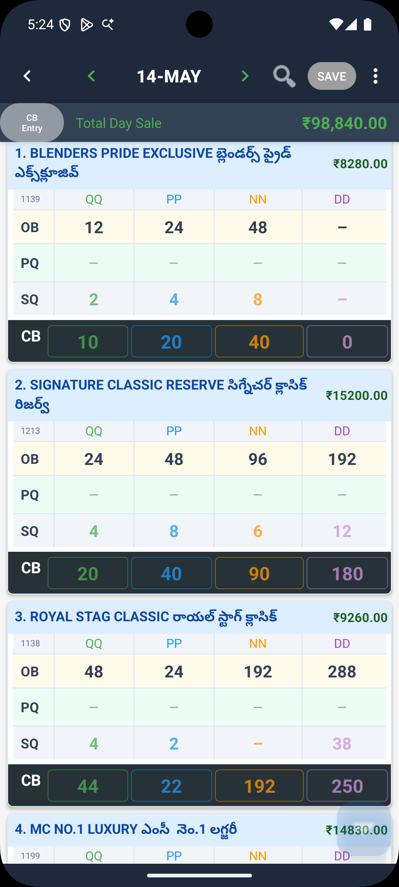

పైన controls:
- Date selector — default గా నేటి తేదీ. ‹ మరియు › arrows వాడి లేదా date తాకి వేరే తేదీ ఎంచుకోండి.
- CB Entry / View Only toggle — edit mode మరియు read-only view మధ్య switch చేస్తుంది. Default: View Only.
Closing Balances Enter చేయడం
- Top bar లో CB Entry తాకి edit mode లోకి వెళ్ళండి
- Configure చేసిన ప్రతి size కు ఒక column తో product list కనిపిస్తుంది
- ప్రతి row లో Opening Balance (OB) మరియు Purchases (PQ) ముందే fill అయి ఉంటాయి
- Closing Balance field తాకి మీరు physically count చేసిన unit count type చేయండి
- Sale quantity (SQ) వెంటనే చూపిస్తుంది: SQ = OB + PQ − CB
- అన్ని products enter చేసిన తర్వాత toolbar లో Save button (green checkmark) తాకండి


Excel నుండి Closing Balances Import చేయడం
Products ఎక్కువగా ఉన్నప్పుడు, లేదా closing stock ఇప్పటికే spreadsheet లో record అయి ఉంటే, Excel నుండి directly import చేయడం వేగంగా ఉంటుంది.
- Daily Stock screen లో ⋮ → Download Closing Template తాకండి
- App Downloads folder లో pre-filled Excel file save చేస్తుంది. Product codes మరియు names ముందే fill అయి ఉంటాయి — వాటిని మార్చకండి.
- Computer లో లేదా Google Sheets / Microsoft Excel లో template తెరవండి
- ప్రతి product మరియు size కు closing balance counts enter చేయండి. ఆ size లేకపోతే blank వదలండి లేదా 0 enter చేయండి.
- Date column లో మీరు enter చేస్తున్న trading తేదీ set చేయండి.
- File save చేసి phone కు transfer చేయండి (WhatsApp, Google Drive, email లేదా USB ద్వారా)
- Daily Stock screen లో తిరిగి వచ్చి ⋮ → Import Closing తాకండి
- Phone storage నుండి file ఎంచుకోండి
- App closing balances import చేసి result summary చూపిస్తుంది (Section 12 చూడండి)
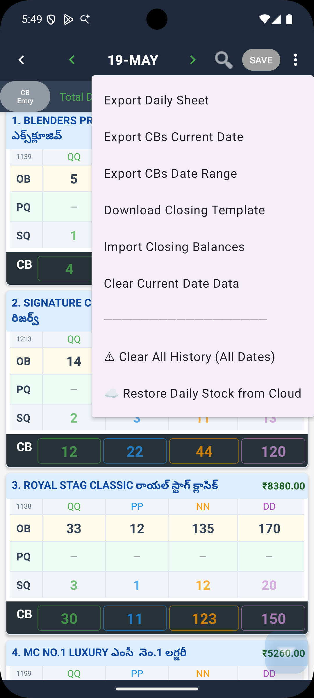
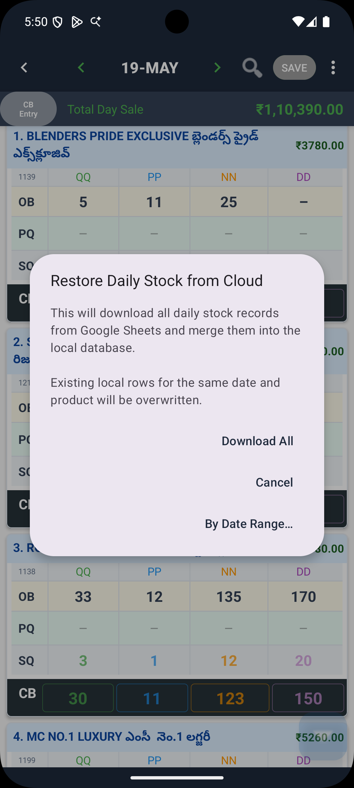
Day-End Reconciliation
Closing balances enter చేసిన తర్వాత, day-end summary complete చేయడానికి list దిగువకు scroll చేయండి:
- Total Day Sales — అన్ని products మరియు వాటి prices నుండి automatically calculate అవుతుంది
- UPI Receipts — రోజు UPI మరియు digital payment collections మొత్తం (₹)
- Day Expenses — ఆ రోజు petty cash expenses
- Cash for Deposit — Sales − UPI − Expenses గా calculate అవుతుంది (negative అయితే red లో చూపిస్తుంది)
- Cash Deposit — bank లో physically deposit చేసిన amount
- Notes — రోజుకు సంబంధించిన గమనికలు
Reconciliation section దిగువన Save తాకి day-end summary lock చేయండి.
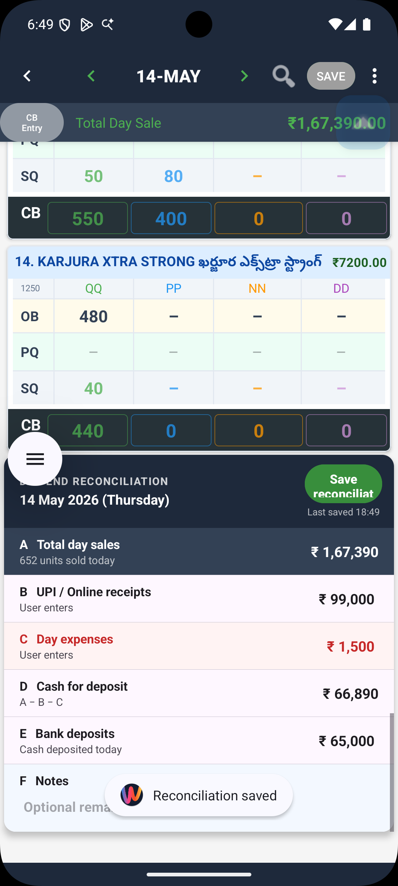
Daily Stock Menu (⋮ కుడివైపు పైన)
| Menu Item | ఏమి చేస్తుంది |
|---|---|
| Export Daily Stock | పూర్తి stock sheet ని Excel గా export చేయండి |
| Export Current Date | నేటి data మాత్రమే Excel గా export చేయండి |
| Export Date Range | ఒక date range Excel గా export చేయండి |
| Download Closing Template | Bulk CB entry కోసం pre-filled Excel template download చేయండి |
| Import Closing | Excel file నుండి closing balances import చేయండి |
| Restore from Cloud | Cloud workspace నుండి daily stock data pull చేయండి |
| Clear Current Date | ఎంచుకున్న తేదీ entries మాత్రమే delete చేయండి |
| Clear ALL Daily Stock | అన్ని daily stock data delete చేయండి ("DELETE ALL" type చేసి confirm చేయాలి) |
Search
Daily stock screen లో ఉండగా product పేరు లేదా product code ద్వారా filter చేయడానికి toolbar లో search icon తాకండి.
Save చేయని మార్పులు
Save చేయకుండా navigate away అయినా లేదా dates switch చేసినా, app అడుగుతుంది: Save Now / Discard / Keep Editing. మీరు explicitly discard చేసే వరకు data safe గా ఉంటుంది.
7 Purchases
ప్రతి supplier delivery invoice ఇక్కడ record చేయండి. Purchases ఆ purchase తేదీ daily stock calculation లో automatically include అవుతాయి.
Purchases List
అన్ని recorded invoices చూడడానికి Home screen నుండి Purchases తాకండి.
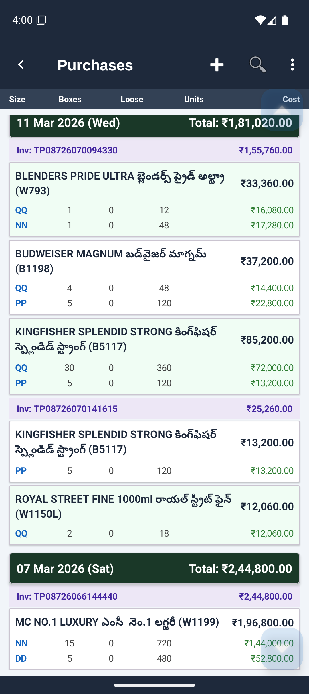
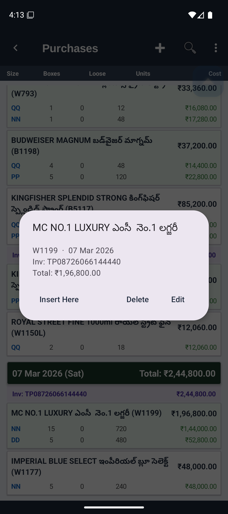
- ప్రతి row లో: date, invoice reference number, supplier పేరు మరియు total cost కనిపిస్తాయి
- పూర్తి invoice details చూడడానికి row తాకండి
- కొత్త purchase add చేయడానికి + (కుడివైపు పైన toolbar లో) తాకండి
- Product పేరు, code, తేదీ లేదా invoice number ద్వారా filter చేయడానికి పైన search bar వాడండి
Purchase Record చేయడం
Purchase Entry form తెరవడానికి + తాకండి.
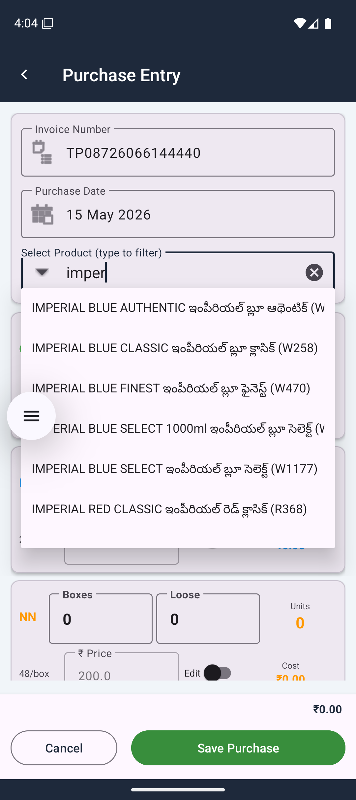
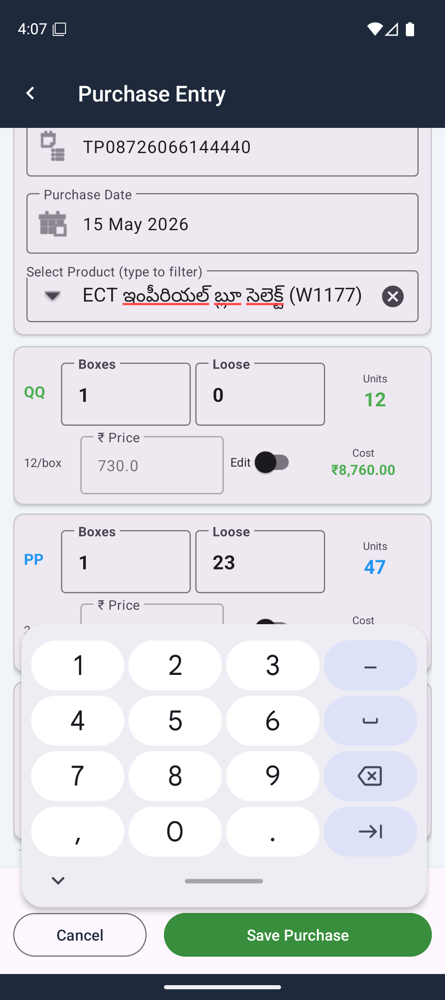
Invoice వివరాలు (పై సగం)
- Invoice No — delivery document నుండి supplier invoice number
- Reference No — ఈ delivery కు unique reference (permit లేదా transport number వంటివి) — duplicate imports నివారించడానికి వాడతారు
- Supplier — dropdown నుండి ఎంచుకోండి లేదా manually type చేయండి
- Date — goods receive అయిన తేదీ (default: నేడు)
- Notes — ఐచ్ఛిక గమనికలు
Product వివరాలు (కింది సగం)
- Product ఎంచుకోవడానికి Select Product తాకండి
- Receive అయిన ప్రతి size కు enter చేయండి:
- Cases — పూర్తిగా sealed cases సంఖ్య
- Loose — individual loose units (partial case)
- Price — per unit price (product master నుండి auto-fill అవుతుంది)
- Total units = (Cases × units per case) + Loose, Cost = Total × Price — automatically calculate అవుతుంది
- అదే invoice లో మరొక product add చేయడానికి Add Another Product తాకండి
- పూర్తయినప్పుడు Save తాకండి
Purchase Edit లేదా Delete చేయడం
List లో ఏదైనా purchase ని double-tap చేస్తే Edit, Delete లేదా Insert Here options తో action dialog తెరుచుకుంటుంది. Deletions permanent అవుతాయి మరియు ఆ తేదీ daily stock totals వెంటనే update అవుతాయి.
అదే Invoice లో Multiple Items చేర్చడం
Purchases list లో existing purchase ని double-tap చేసి Insert Here ఎంచుకోండి. అదే invoice number, తేదీ మరియు supplier తో pre-filled కొత్త purchase form తెరుచుకుంటుంది — product మాత్రమే మార్చండి.
Excel నుండి Purchases Import చేయడం
చాలా products తో delivery వచ్చినప్పుడు, లేదా bulk historical invoices enter చేసేటప్పుడు, Excel నుండి import చేయడం చాలా వేగంగా ఉంటుంది.
- Purchases screen లో ⋮ → Download Template తాకండి
- App Downloads folder లో pre-filled Excel template save చేస్తుంది. Columns: Date, Invoice No, Reference No, Supplier, Product Code, మరియు ప్రతి size కు Cases, Loose, Price.
- Computer లో లేదా Google Sheets / Microsoft Excel లో template తెరవండి
- ప్రతి invoice యొక్క ప్రతి product line కు ఒక row fill చేయండి:
- Delivery Date enter చేయండి (format: DD-MM-YYYY లేదా YYYY-MM-DD)
- Delivery document నుండి Invoice No మరియు Reference No enter చేయండి
- Supplier పేరు enter చేయండి
- Product Code column లో సరైన product row వెతకండి
- Receive అయిన ప్రతి size కు Cases మరియు Loose enter చేయండి
- ప్రతి size కు per unit Price enter చేయండి
- ప్రతి product కు rows repeat చేయండి. ఒకే file లో అనేక invoices enter చేయవచ్చు — ప్రతి delivery కు వేరే Invoice No వాడండి.
- File save చేసి phone కు transfer చేయండి
- Purchases screen లో తిరిగి వచ్చి ⋮ → Import from Excel తాకండి
- Phone storage నుండి file ఎంచుకోండి
- App అన్ని rows import చేసి result summary చూపిస్తుంది (Section 12 చూడండి)
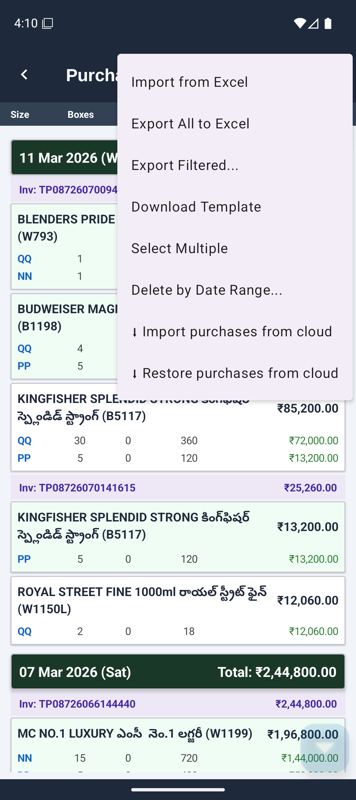
Purchases Menu (⋮ కుడివైపు పైన)
| Menu Item | ఏమి చేస్తుంది |
|---|---|
| Import from Excel | Excel file నుండి purchases bulk-import చేయండి (ముందు template download చేయండి) |
| Export All | అన్ని purchase records ని Excel గా export చేయండి |
| Export Filtered | ఒక date range లో purchases export చేయండి |
| Download Template | మీ product list తో pre-filled Excel template పొందండి |
| Delete by Date Range | ఒక date range లో అన్ని purchases delete చేయండి |
| Multi-Select | ఒకేసారి delete చేయడానికి multiple purchases select చేయండి |
| Download from Cloud | Cloud workspace నుండి purchase data pull చేయండి |
8 Reports
Home screen నుండి Reports తాకండి.
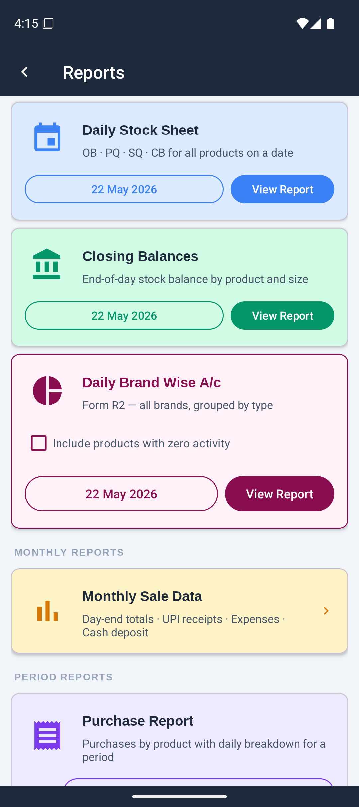
Daily Stock Sheet
ఎంచుకున్న తేదీలో అన్ని products మరియు sizes కు opening balance, purchases, closing balance మరియు calculated sales తో పూర్తి table.
- Daily Stock Sheet తాకండి
- తేదీ ఎంచుకోండి
- View Report తాకండి
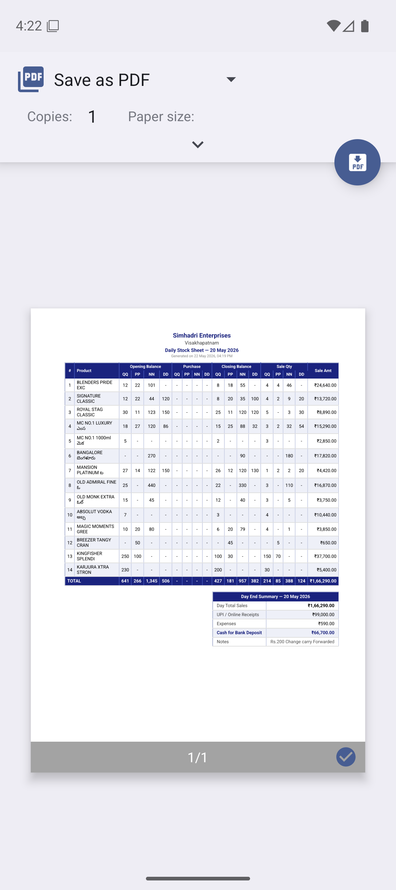
- Business name, owner name మరియు తేదీ report header గా కనిపిస్తాయి (Business Info నుండి)
- Sheet ని Downloads కు save చేయడానికి Export to Excel (కుడివైపు పైన) తాకండి
Closing Balances
ఎంచుకున్న తేదీలో అన్ని sizes లో per product end-of-day stock quantities. Physical stock quick verification కు useful.
Daily Brand Wise Account
Product category వారీగా brand పర్ sales మరియు stock summary తో daily account. మీ business type కు అవసరమైన regulatory reporting కు useful.
- Daily Brand Wise A/c తాకండి
- తేదీ ఎంచుకోండి
- View Report తాకండి
- అవసరమైతే Excel కి export చేయండి
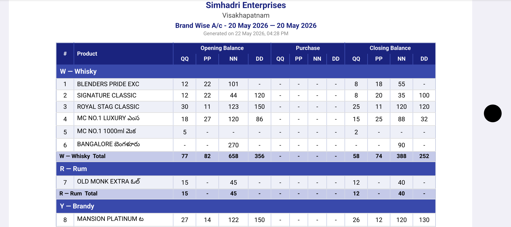
Purchase Report (Period)
ఒక date range లో invoice వారీగా group చేయబడిన అన్ని purchase records — supplier-wise లేదా invoice-wise reconciliation కు useful.
- Purchase Report తాకండి
- From మరియు To తేదీలు ఎంచుకోండి
- View Report తాకండి
Monthly Sale Data
ఎంచుకున్న నెలలో ప్రతి రోజు day-end commit totals (sale amount, UPI receipts, expenses, cash deposit) చూపిస్తుంది — monthly reconciliation మరియు accounts కు.
- Monthly Sale Data తాకండి
- ◀ మరియు ▶ arrows తో months navigate చేయండి, లేదా month పేరు తాకి ఏ నెల/సంవత్సరానికైనా jump చేయండి
Day-end reconciliation save కాని రోజులు amber రంగులో * marker తో highlight అవుతాయి. Closing balances reconciliation తర్వాత update అయిన రోజులు refresh icon తో mark అవుతాయి. Column totals దిగువన కనిపిస్తాయి; negative అయితే red లో చూపిస్తాయి.
| Monthly Summary Menu (⋮) | ఏమి చేస్తుంది |
|---|---|
| Share | Report ని colour-coded HTML file గా share చేయండి |
| Print / Save as PDF | Phone print service ద్వారా print చేయండి లేదా PDF గా save చేయండి |
| Import Reconciliation from Cloud | Cloud workspace నుండి day-end data pull చేయండి |
| Delete Reconciliation Range | ఒక date range లో day-end records remove చేయండి |
Monthly Stock Purchases
ఎంచుకున్న నెలలో ప్రతి product కు total purchase quantities, ఒక product కు ఒక row.
Zero-Activity Products చేర్చడం
Report filter లో "Include products with zero activity" toggle చేసి, ఆ తేదీలో sales లేదా purchases లేని products చూడవచ్చు. Default గా off ఉంటుంది.
9 Items / Products
Home screen నుండి Items / Products తాకండి.
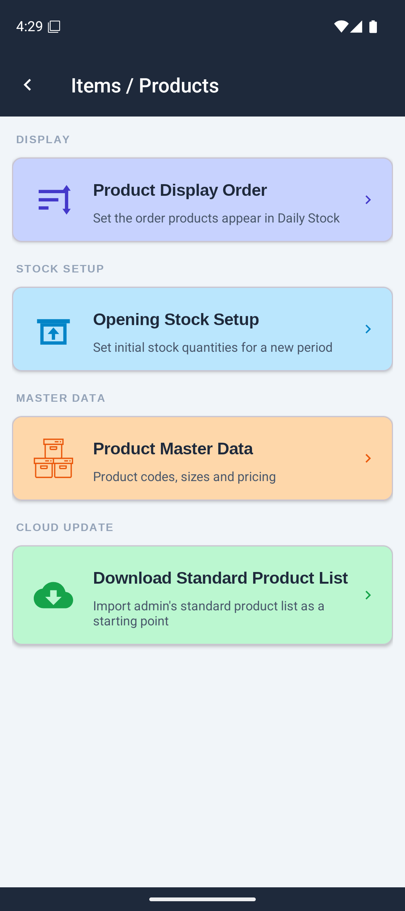
Product Display Order
Daily Stock Entry screen మరియు reports లో products కనిపించే క్రమాన్ని నియంత్రిస్తుంది.
- Product Display Order తాకండి
- Edit mode లోకి వెళ్ళడానికి Edit switch toggle చేయండి
- ఏదైనా product ని up లేదా down move చేయడానికి Long-press చేసి drag చేయండి
- Edit switch off చేసి product row ని double-tap చేస్తే Deactivate option వస్తుంది (daily stock నుండి దాచి, దిగువన Inactive section కి move చేస్తుంది). Inactive product ని double-tap చేసి Re-activate చేయండి.
- పూర్తయినప్పుడు Renumber & Save తాకండి, లేదా Discard తో cancel చేయండి
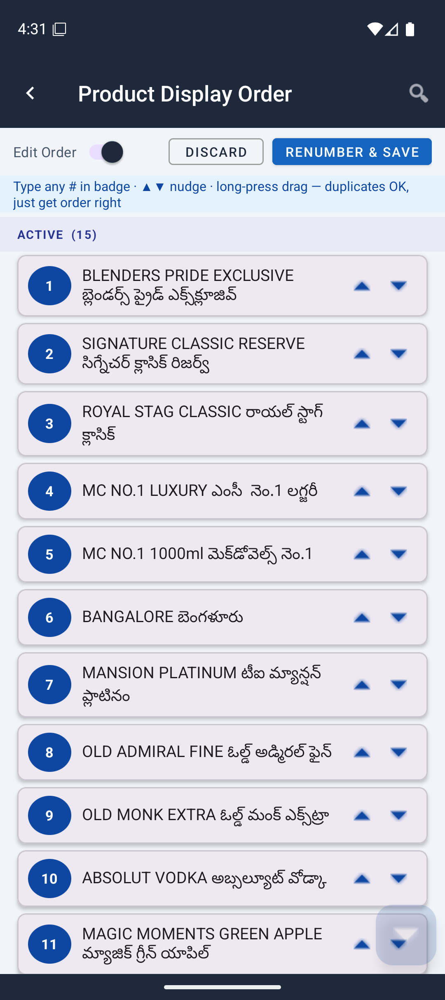
Opening Stock Setup
కొత్త period start చేసేటప్పుడు లేదా starting quantities సరిచేసేటప్పుడు వాడతారు. పూర్తి walkthrough కోసం Section 4 — Step 4 చూడండి.
- Opening Stock Setup తాకండి
- తేదీ ఎంచుకుని Begin Entry లేదా Edit తాకండి
- Keyboard వాడి ప్రతి product కు per size unit counts enter చేయండి
- దిగువన SAVE తాకండి
- Opening Stock Setup → ⋮ → Download Template తాకండి
- Computer లో template లో stock quantities fill చేయండి
- File ని phone కు transfer చేయండి
- ⋮ → Import from Excel తాకి file ఎంచుకోండి
Product Master Data
Reference కోసం మీ పూర్తి product list — product codes, పేర్లు మరియు size variants — చూపిస్తుంది.
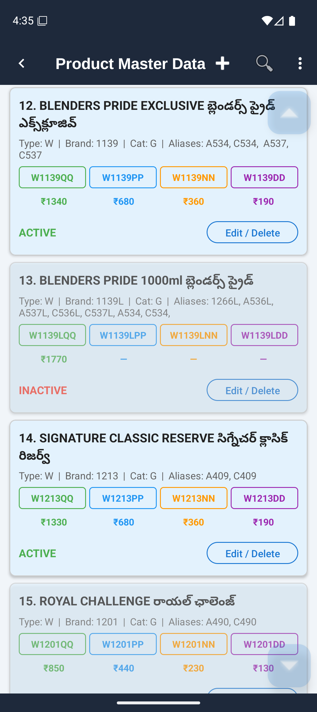
Standard Product List Download చేయడం
Admin కొత్త products add చేసినప్పుడు లేదా prices update చేసినప్పుడు దీన్ని run చేయండి.
- Download Standard Product List తాకండి
- Download confirm చేయండి
- Complete అయ్యే వరకు వేచి ఉండండి — కొత్త మరియు updated products add అవుతాయి; మీ display order preserve అవుతుంది
10 Settings
Home screen నుండి Settings తాకండి.
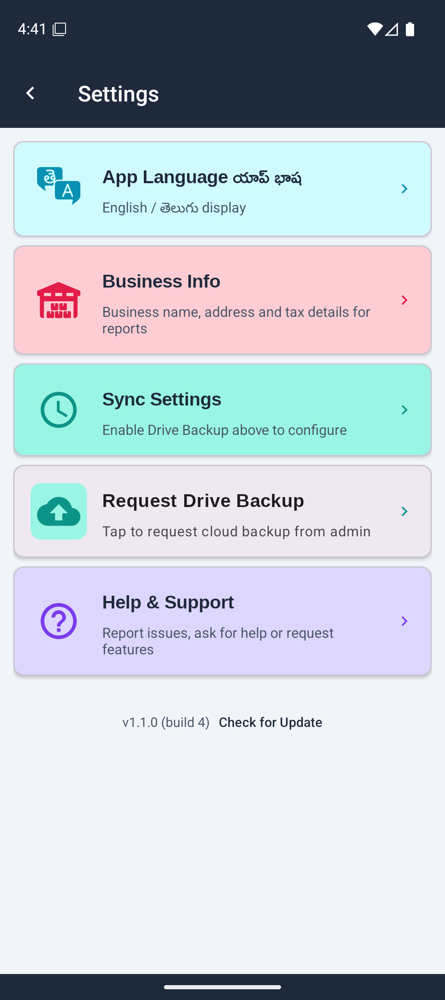
Language
English మరియు తెలుగు మధ్య switch చేయడానికి App Language తాకండి. మార్పు వెంటనే అన్ని screens కు apply అవుతుంది.
Business Info
మీ business name, owner name, address మరియు phone update చేయండి. Getting Started setup యొక్క Step 1 లో ఉన్న అన్ని fields ఇక్కడ కూడా ఉంటాయి.
- Changes ని admin's system కు sync చేయడానికి Save & Update Registration తాకండి
Business Info overflow menu (⋮ కుడివైపు పైన)
| మీ Status | Menu Option | ఏమి చేస్తుంది |
|---|---|---|
| Registered | Delete Account & Data | అన్ని cloud data, registration మరియు sign-in account permanently remove చేస్తుంది |
| Not registered | Clear Local Data | ఈ device నుండి అన్ని inventory data delete చేస్తుంది (exported Excel files affected కావు) |
| Deletion pending | Complete Account Deletion | Re-login తర్వాత sign-in account removing complete చేస్తుంది |
Drive Backup
Cloud backup యొక్క current state చూపిస్తుంది. పూర్తి workflow కోసం Section 11 చూడండి.
Sync Settings
Drive Backup active అయినప్పుడు మాత్రమే available. App automatically ప్రతి 6 గంటలకు sync చేయాలా లేదా Sync button తాకినప్పుడు మాత్రమే sync చేయాలా అని configure చేయండి.
Help & Support
- Report an Issue / Ask for Help — device మరియు app version pre-filled తో support email పంపుతుంది
- Request Feature — Simhadri Systems కు feature request పంపుతుంది
- Import Test Data — sample data reload చేస్తుంది (registration అవసరం)
- User Guide — ఈ guide ని browser లో తెరుస్తుంది
Error Log
App errors encounter చేసినప్పుడు, device లో log save అవుతుంది. Errors ఉంటే Settings దిగువన Share Error Log button కనిపిస్తుంది. Support contact చేసేటప్పుడు log share చేయండి.
App Version
Settings దిగువన చూపిస్తుంది. Play Store లో newer version check చేయడానికి Check for Update తాకండి.
11 Cloud Drive Backup
Cloud backup ఐచ్ఛికం. దాన్ని లేకుండా app పూర్తిగా offline పని చేస్తుంది. Enable చేసినప్పుడు, మీ daily stock, purchases మరియు day-end summaries admin's Drive workspace లో private Google Sheet లో store అవుతాయి — మీ personal Drive నుండి వేరుగా.
Enable చేయడం ఎలా
- Register చేయండి — Settings → Business Info కి వెళ్ళి business name fill చేసి Save & Register తాకండి
- Workspace request చేయండి — Settings → Drive Backup card తాకి → Request Drive Backup తాకండి
- Consent terms చదవండి — ఏ data store అవుతుందో మరియు admin కు read access ఉంటుందని dialog వివరిస్తుంది
- I Agree — Enable Backup తాకండి
- App admin's system ని contact చేస్తుంది:
- Invited list లో ఉంటే → workspace వెంటనే create అవుతుంది → "Drive Backup Active" green లో చూపిస్తుంది
- Invited list లో లేకపోతే → "Drive Backup Pending" చూపిస్తుంది — admin activate చేస్తారు

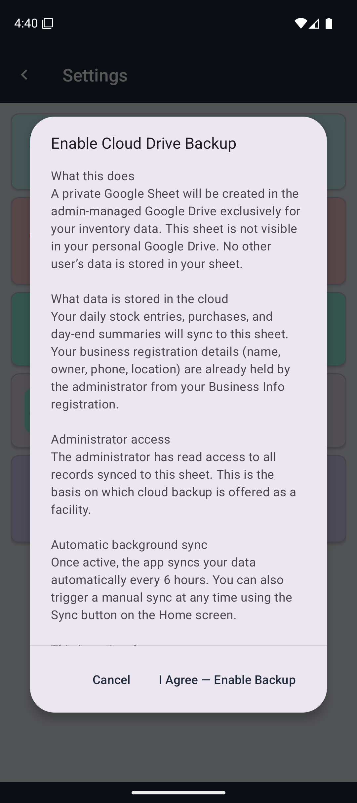
ఏమి Sync అవుతుంది
| Data | Sync అవుతుందా? |
|---|---|
| Daily stock entries | అవును |
| Purchase records | అవును |
| Day-end reconciliation | అవును |
| Opening stock | అవును |
| Product list | Admin నుండి read-only download మాత్రమే |
| Licence/Reg. number, పూర్తి address | కాదు — device లో మాత్రమే ఉంటుంది |
Home Screen లో Sync Status Icons
| Icon రంగు | అర్థం |
|---|---|
| White | అన్ని records విజయవంతంగా sync అయ్యాయి |
| Red | ఒకటి లేదా అంతకు ఎక్కువ records fail అయ్యాయి — retry కు తాకండి |
| Amber / Yellow | Drive Backup setup కాలేదు |
Viewer vs Editor Role
| Role | మీరు ఏమి చేయగలరు |
|---|---|
| Editor (default) | పూర్తి access — data enter చేయడం, up మరియు down sync, అన్ని buttons active |
| Viewer | Read-only — cloud నుండి మాత్రమే sync down; data entry మరియు save buttons hidden |
Role మార్పు అవసరమైతే admin ని contact చేయండి.
Deactivate లేదా Delete చేయడం
- Deactivate — Settings → Drive Backup (active) → Deactivate. Future auto-sync ఆగిపోతుంది. Local data affected కాదు.
- Delete Account & Data — Settings → Business Info → ⋮ → Delete Account & Data. అన్ని cloud data, registration మరియు sign-in account permanently remove అవుతాయి.
12 Data Management & Excel Import/Export
WinEntry records మరియు reports కోసం Excel కి data export చేయగలదు, మరియు manual typing నివారించడానికి Excel నుండి data import కూడా చేయగలదు. అన్ని operations standard .xlsx files వాడతాయి — Microsoft Excel, Google Sheets లేదా ఏ compatible spreadsheet app లోనైనా తెరుచుకుంటాయి.
Excel Export — Quick Reference
Exported files phone యొక్క Downloads folder కు save అవుతాయి. Export తర్వాత Share button ద్వారా WhatsApp, email లేదా ఏ app ద్వారానైనా directly share చేయవచ్చు.
| Export చేయాల్సింది | ఎక్కడ దొరుకుతుంది | గమనికలు |
|---|---|---|
| Daily stock full sheet | Daily Stock → ⋮ → Export Daily Stock | ఎంచుకున్న తేదీలో అన్ని products, అన్ని sizes |
| Closing balances (single date) | Daily Stock → ⋮ → Export Current Date | End-of-day stock snapshot కు useful |
| Daily stock (date range) | Daily Stock → ⋮ → Export Date Range | From మరియు To తేదీలు ఎంచుకోండి |
| All purchases | Purchases → ⋮ → Export All | ఎప్పటికప్పుడు record చేసిన ప్రతి invoice |
| Purchases (date range) | Purchases → ⋮ → Export Filtered | From మరియు To తేదీలు ఎంచుకోండి |
| Monthly summary | Reports → Monthly Sale Data → ⋮ → Share | Colour-coded HTML లేదా Print ద్వారా PDF |
Excel Import — ఎలా పని చేస్తుంది
ప్రతి data type కు import system ఒకే three-step pattern follow చేస్తుంది:
ఎప్పుడూ app లో నుండే template download చేయడం మొదలుపెట్టండి. Template లో మీ product codes మరియు app expect చేసే exact format లో column headings ముందే fill అయి ఉంటాయి. Import file scratch నుండి create చేయకండి — template మాత్రమే వాడండి.
Computer లో లేదా phone లో (Google Sheets, Microsoft Excel) template తెరవండి. Quantity/value columns లో మీ data enter చేయండి. Product codes, column headings లేదా sheet structure మార్చకండి. .xlsx గా save చేయండి.
Filled file ని phone కు transfer చేయండి (WhatsApp, Google Drive, email లేదా USB). App లో ⋮ → relevant Import option తాకి file ఎంచుకోండి. App commit చేయడానికి ముందు ప్రతి row validate చేస్తుంది.
Excel Import — Quick Reference
| Import చేయాల్సింది | Template ఎక్కడ దొరుకుతుంది | Import ఎక్కడ చేయాలి |
|---|---|---|
| Opening stock | Products → Opening Stock → ⋮ → Download Template | Products → Opening Stock → ⋮ → Import from Excel |
| Closing balances | Daily Stock → ⋮ → Download Closing Template | Daily Stock → ⋮ → Import Closing |
| Purchases | Purchases → ⋮ → Download Template | Purchases → ⋮ → Import from Excel |
- Opening stock import — Section 4 (Step 4, Option B) మరియు Section 9
- Closing balance import — Section 6 (Excel నుండి Closing Balances Import)
- Purchase import — Section 7 (Excel నుండి Purchases Import)
Import Result Summary
| Result | అర్థం |
|---|---|
| New | Records విజయవంతంగా import అయ్యాయి |
| Skipped | ఇప్పటికే exist చేస్తున్నాయి — same product + date, లేదా same invoice + date. మార్పు చేయబడలేదు. |
| Failed | Product code దొరకలేదు, లేదా data format error |
Skipped లేదా failed rows list ని clipboard కి copy చేయడానికి Copy List తాకండి. Review చేసి figures సరిచేసిన తర్వాత retry చేయండి.
13 Help మరియు Support
Settings → Help & Support కి వెళ్ళండి.
Support email: simhadrisystems@gmail.com
Support Contact చేయడం
Ask for Help లేదా Report Issue తాకండి. App మీ app version, Android version మరియు device model తో message template pre-fill చేస్తుంది. Data automatically పంపబడదు.
సాధారణ సమస్యలు
| సమస్య | ఏమి చేయాలి |
|---|---|
| Onboarding లో "Download" బదులు "Request Access" కనిపిస్తోంది | Admin activate చేయాలి — "Request Access" తాకి request పంపండి |
| "Drive Backup Pending" ఒక రోజు కంటే ఎక్కువ కాలం ఉంది | Card తాకి → Send Reminder |
| Home screen లో sync icon red గా ఉంది | Internet connection check చేసి sync icon తాకి retry చేయండి |
| Opening balance తప్పుగా కనిపిస్తోంది | Previous రోజు committed అయిందో check చేయండి — Daily Stock లో ఆ తేదీ verify చేయండి |
| Daily stock list లో product లేదు | Items/Products → Download Standard Product List run చేయండి |
| "Account Not Activated" error వస్తోంది | Email లేదా WhatsApp ద్వారా admin ని contact చేయండి |
| Account deletion తర్వాత "Sign in again to complete" చూపిస్తోంది | Sign out చేసి same account తో sign in చేసి Business Info → ⋮ → Complete Account Deletion కి వెళ్ళండి |
Test Data Import చేయడం
Settings → Help & Support → Import Test Data కి వెళ్ళండి. Practice కోసం sample opening balances మరియు dummy stock data load అవుతుంది. App registration అవసరం.
Sample opening balance తేదీ confirm చేయండి. Live trading ప్రారంభించడానికి ready అయినప్పుడు sample data ని real figures తో replace చేయండి.